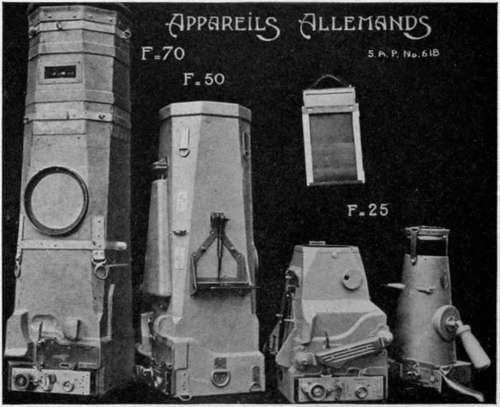
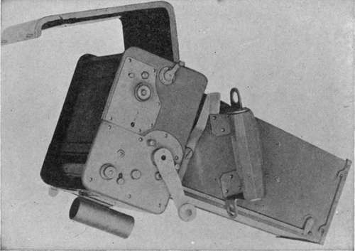

Chapter VI. Plate-Holders And Magazines
Description
This section is from the book "Airplane Photography", by Herbert E. Ives. Also available from Amazon: Airplane photography.
Chapter VI. Plate-Holders And Magazines
In the earlier days of airplane photography the ordinary plate-holder or double dark slide was used to some extent, but it is ill-suited to the purpose because of the considerable time and attention required for its operation. It has nevertheless the merit of adding little to the length of the camera, and it works in any position. For these reasons it has remained in occasional use for the taking of oblique views with long focus cameras in a cramped fuselage.
Next in order of progress rank the simple box magazines, for holding a dozen, eighteen or twenty-four plates, as used in the English C, E, and L type cameras. These are little more than boxes with sliding lids which when open permit the introduction or removal of the plates. Figs. 45 and 46 illustrate the magazine of this type as made for the English C and E cameras. It is constructed of wood, grooved to fit tracks on the camera, and is furnished with a sliding door or lid hinged in the middle to fold down out of the way when open. The eighteen plates are carried in metal sheaths, both to provide opaque screens between them, and to protect them from injury in the mechanism of the camera. Fig. 27 shows the all-metal magazine made for the American model L camera. This differs from the English in material of construction, plate capacity (24 instead of 18) and manner of operating the slide, which is built up of three thicknesses of phosphor bronze and draws out through metal guides bent into semicircular form. A snap catch holds this slide at either end of its travel. The leather strap introduced in the American model for carrying and handling is a distinct to the back of the magazine, and forced in behind the other plates. The number of plates exposed is indicated either by numbers on the backs of the sheaths, visible through a red glazed opening in the back, or else by a counter actuated by the metal slide rod. Usually twelve are carried in a magazine. For aerial work the common design of this magazine as used for ground work must be modified by providing extra large easily grasped hooks both on the draw rod and on the dark slide, which must be drawn before improvement. These magazines contain no springs or other mechanism, as the cameras with which they are used depend upon the action of gravity for emptying the upper (feeding) magazine, and filling the lower (receiving) one.

Fig. 27. - type camera showing open negative magazines and shutter mechanism.
Next in order of complexity may be ranked the bag magazine (Figs. 31 and 44). In this the exposed plate is pulled out of the magazine proper by a metal slide or rod into a leather bag. The rod is then pushed back, the plate in its metal sheath is grasped through the leather bag, lifted making the first exposure and replaced after the last. The small rings and grips of the standard commercial magazine are almost impossible to handle through heavy gloves.
Fig. 31. - Aerial hand camera (U. S. type A-2).

Fig. 44. - U. S. hand-operated aerial camera (type M) with 10 and -20 inch cones.
The next type of magazine is represented by three designs, the Gaumont and deMaria, used very generally by the French during the war, and the Ernemann, used almost universally in the German air service (Figs. 32, 40 and 42). In all of these the operation of plate changing is the same: the end of the magazine is pulled out and thrust back, a more simple operation than the bag manipulation just described. The internal workings are different according to size. In the smaller French magazines (13X18 cm.) the camera is first pointed upward, all the plates are drawn out except the one to be changed, and this, with the aid of springs, drops to the bottom, after which the other plates push back over it. The plates pull out in the direction of their long dimension. In the larger French magazine (18X24 cm.) only the exposed plate pulls out. The pull is in the direction of the shorter dimension of the plate, which is lifted up by heavy springs and slides back over the top of the pile. In the Ernemann magazine only six plates are carried, which there is good reason to believe represent the maximum feasible number, judging by the reports of jambs and breakages in the twelve-plate French magazines. In all of these magazines laminated wood slides pull out and in at each operation, and while satisfactory if made and operated in one climate, experience indicates that if made in America and sent abroad swelling of the wood may be expected to prevent their successful operation.
Fig. 32. - Various plate magazines used on aerial cameras.

Fig. 40. - 50 centimeter deMaria hand operated camera on tennis ball mounting.
Fig. 42. - German aerial cameras.
Alternative forms of magazine, somewhat more practical from the standpoint of manufacture and export, are several designs embodying two compartments (Fig. 32). In the most simple of these the plates are moved, immediately before actuated either by a lever, in the hand camera, or by the power drive, in the automatic design (Figs. 33 and 53). Another illustration is afforded bv the Piserini and Mondini or after exposing, from the unexposed to the exposed side. Illustrative of this type are the Folmer designs, in which the to-and-fro motion is imparted by a rack geared to a pinion magazine, in which the operation of changing is performed by a back-and-forth motion of a hand-grip, which also sets the camera shutter (Fig. 47).
Fig. 33. - TJ. S. Air Service hand camera, with two-compartment magazine.
Fig. 34. - Film type hand camera.
Fig. 35. - Apparatus for straightening plate sheaths.

Fig. 47. - Italian (Piserini and Mondini) two compartment magazine hand-operated camera.
Other more complicated magazines have been designed, some of which are shown in the diagrammatic ensembles of Figs. 32 and 48. In the Jacquelin, the main body of plates is raised while the bottom (exposed) plate is folded against the side. The main body of plates then drops back to place, the exposed plate is carried on upward and folds down on the back of the pile. The Bellieni magazine system uses three, a central feeding one and two below for receiving, one on each side of the camera body. These were made solely for attachment to captured German cameras. In the Fournieux magazine the plates are carried in an interior rotating box. The plate to be exposed is dropped off the front of the pile, down to the focal plane, and after exposure is picked up and placed at the back of the pile, which has turned over in the meanwhile. The deRam rotating magazine is described in connection with the camera of which it is an essential part (Fig. 52).
In these magazines the center of gravity changes as the exposed plates are moved over, and only half the inside space is occupied with plates. These objections are overcome in the Chassel form, where both compartments are always full. Transfer of the bottom exposed plate from one compartment to the other is compensated for by the simultaneous shift of the top plate in the receiving compartment, to the feeding side. In a modification of this idea by Ruttan the exposing position is when the plates are half-way through the shifting process, whereby the magazine may be symmetrically mounted on the camera body.

Fig. 36. - Training plane equipped for photography, showing "L" camera in floor mount and magazine rack forward of the observer.
For the protection of the plates during their manipulation, and in the camera, all plate magazines thus far developed carry them in thin metal sheaths. These add greatly both to the weight and to the time necessary to handle the plates, but no means have as yet been found for dispensing with them. Fig. 35 shows a representative sheath or septum, as used in the L camera. On three sides the edge is bent up and turned over, forming a ledge for the plate to press against. The fourth side is left open for inserting the plate, which is then held in by a small upward projecting lip, and kept close against the ledges by narrow springs at the sides. To insert or remove the plate the projecting lip is depressed, either by springing the sheath by pressure from the sides or by using an appropriate tool.
Care Of Sheaths
Unless systematically taken care of, plate sheaths become bent or dented They are then a menace to camera operation, catching or jamming in the plate changing process, breaking plates and damaging camera mechanisms. In order to maintain them flat and true, steel forms are necessary on which the sheaths may be hammered to shape with a mallet (Fig. 35).
Magazine Racks
Reconnaissance and mapping call for a number of exposures much greater than the capacity of one 12, 18, or 24 plate magazine. Additional magazines must therefore be carried. These should be in racks convenient to the observer (Fig. 36), securely held yet capable of quick removal and insertion. In the rack designed to carry two of the metal magazines for the American L Camera, the magazines slide into loose grooves formed by a metal lip. They are prevented from slipping out by a spring catch, past which they slide when inserted but which is instantly thrown aside by pressure of the thumb as the hand grasps the magazine handle for removal.
Continue to:
- prev: Representative Shutters
- Table of Contents
- next: Chapter VII. Hand-Held Cameras For Aerial Work. Field Of Use
Tags
camera, lens, airplane, aerial, film, exposure, photography, maps, birdseye